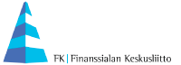

<div class="sharelanding" style="display:none;">
	<div class="sharelanding-box">
		<div class="sl-left">
			<h3>Henkilö <a href="">Alexander Stubb87</a> on luonut seuraavanlaisen vision kestävästä hyvinvointiyhteiskunnasta:</h3>
			<div class="solutionparameters">
				<table>
					<tr><td>Julkisen velan suhde BKT:hen</td><td><span class="big"><span class="solutionvalue"></span>%</span> (tavoite: &lt;60%)</td></tr>
					<tr><td>Alijäämän suhde BKT:hen</td><td><span class="big"><span class="solutionvalue"></span>%</span> (tavoite: &lt;3%)</td></tr>
					<tr><td>Vähennykset palveluihin</td><td><span class="big"><span class="solutionvalue"></span> M€</span> (tavoite: 0 M€)</td></tr>
					<tr><td>Työurat pidennetään</td><td><span class="big"><span class="solutionvalue"></span></span> vuodella</td></tr>
					<tr><td>Olettamus talouskasvusta 2016-2025</td><td><span class="big"><span class="solutionvalue"></span>%</span> (josta inflaatio 1,4%)</td></tr>
				</table>
			</div>
			<div class="sl-buttonspace sl-open-space"><button type="button" class="sl-open">Tutustu ratkaisuun</button></div>
		</div>
		<div class="sl-right">
			<h3>Mikä on Budjettipeli?</h3>
<p>Suomen väestö vanhenee nopeammin kuin missään muualla maailmassa. Vanhusten kasvava määrä suhteessa työikäisiin tarkoittaa, että lähivuosina julkiset menot kasvavat tuntuvasti mutta verokertymä ei juuri kasva.</p>

<p>Hyvinvointipalvelut, joihin olemme kaikki tottuneet, ei ole mahdollista rahoittaa nykyiseen tapaan ilman, että julkinen velka nousee kestämättömälle tasolle. Budjettipelissä voit kokeilla tutkia uusia tapoja jakaa hyvinvointipalveluiden rahoitustaakkaa julkisyhteisöjen ja yksityishenkilöiden välillä.</p>

<p>Miltä näyttää sinun näkemyksesi kestävästä hyvinvointiyhteiskunnasta?</p>
<div class="sl-buttonspace"><button type="button" class="sl-new">Aloita uusi peli</button></div>
		</div>
		<div class="sl-sponsors">
			<a href="http://stm.fi/" target="_blank"></a>
			<a href="http://www.soste.fi/" target="_blank"></a>
			<a href="http://vatt.fi/" target="_blank"></a>
			<a href="http://www.fkl.fi/" target="_blank"></a>
			<a href="http://www.kpmg.com/fi/fi/sivut/default.aspx" target="_blank"></a>
			<span><a href="http://hahmota.fi/" target="_blank">Suunnittelu ja toteutus:<br>HAHMOTA OY<a/><span>
		</div>
	</div>
</div>